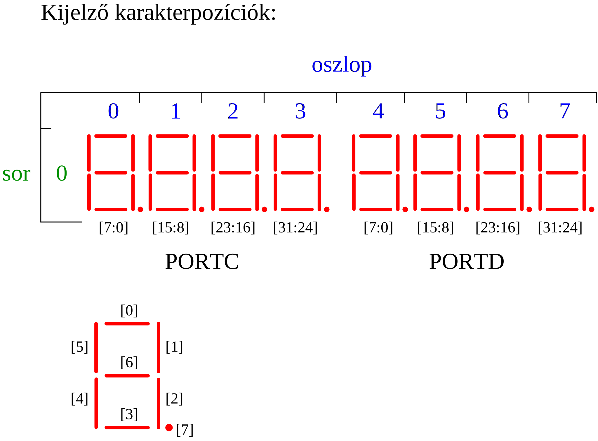

Fejlesztés Development | CPU | Számítógép Computer | Assembler | Monitor | Függvények Library
Perifériák: GPIO | Időzítő | UART | Board Control | Óra
FPGA megvalósítás: Nexys4DDR | Boolean | LogSys
A mikroprocesszort kiegészítve néhány alkatrésszel, mikroszámítógépet alakítunk ki.
A processzort memóriával, GPIO áramkörökkel, időzítővel és UART-al, az eszközöket összekötő buszt pedig címdekóderrel egészítjük ki. A clk bemenet a számítógép, egyúttal a CPU órajele is. Az FPGA megvalósításban a clk bemenetre 25 MHz frekvenciájú órajelet kötünk.
A processzor memória illesztőjére kapcsolódó memória fogja tárolni a futtatott programot, valamint a feldolgozott adatokat. A memóriát az FPGA-n alakítjuk ki, a lefordított program kódját pedig beillesztjük az alkatrészbe.
A memória kapacitása kártyától függően 64, vagy 128 Kszó, a címzéshez így 16, vagy 17 bitre van szükség. Minden szó 32 bites.
A külvilággal való kapcsolattartást a memória illesztőre kapcsolt GPIO (General Purpose Input Output) áramkörök valósítják meg.
A kimeneti kivezetéseket egy négy regiszterből álló “memória” valósítja meg, amelyből mind a négy regiszter kimenetei ki vannak vezetve. A számítógép kimenetei a PORTA, PORTB, PORTC, PORTD nevet viselik, és a GPIO kimeneti adatregiszterének (ODR) értéke jelenik meg rajtuk. A regiszterek tartalma írható (memória írás utasítással), valamint vissza is olvasható a tartalmuk.
A 4 regiszter 4 egymást követő címen található, a kezdőcímet a címdekóder határozza meg:
| Offszet | Port | GPIO regiszter |
|---|---|---|
| 0 | PORTA | GPIOA.ODR |
| 1 | PORTB | GPIOB.ODR |
| 2 | PORTC | GPIOC.ODR |
| 3 | PORTD | GPIOD.ODR |
Bemenetként szintén regisztert használunk. A regiszter olvasásakor a bemeneti vezetékek állapota eltárolódik a regiszterben (mintavétel), a processzor ennek a tartalmát fogja megkapni. A bemeneti GPIO áramkörben egy regiszter van, így egy 32 bites bemenő adathoz lehet vele hozzáférni. A számítógépben két ilyen áramkört kapcsolunk a buszra, így két bemeneti portot kapunk:
| Port | GPIO regiszter |
|---|---|
| PORTI | GPIOI.IDR |
| PORTJ | GPIOJ.IDR |
Az időzítő egy 32 bites bináris előre számlálót tartalmaz, amely a számítógéptől független órajellel léptethető. Az FPGA megvalósításnál 1 MHz-es órajelet használunk, míg a verilog szimulációban az időzítő frekvenciájú órajelet kap. A számlálás ki, illetve bekapcsolható, nullától egy beállítható végértékig tart, melynek az elérése után a számláló nullázódik. A végérték elérését a túlcsordulás kimenet 1 értékűvé válása jelzi, a kimenetet szoftverből kell törölni, törlésig 1 marad.
Offszet: 0
Kezdőérték: 0
A regiszter tartalma vezérli a számláló működését.
Offszet: 1
Kezdőérték: 0
A regiszter a számlálás végértékét állítja be. Amikor a számláló értéke az AR regiszter tartalmával egyezik, a túlcsordulás kimenet 1 lesz, a számláló a következő lépéskor nullázódik.
Offszet: 2
Kezdőérték: 0
A számláló aktuális értékét tartalmazó regiszter. Írás művelettel a számláló értéke megváltoztatható.
Offszet: 3
Kezdőérték: 2
Az időzítő állapotáról tartalmaz információt.
Univerzális aszinkron soros adó- vevő áramkör. Az áramkör vevő oldala egy 16 elemű belső FIFO-val van ellátva, amely kiolvasás előtt az utolsó 15 vett adatot tudja tárolni.
Offszet: 0
Kezdőérték: 0
8 bites adat regiszter, írása elindítja a küldő műveletet. Olvasása a FIFO legrégebbi tárolt karakterét adja. Olvasáskor a [31:8] bitek értéke 0 lesz.
Offset: 1
Kezdőérték: 0
Offszet: 2
Kezdőérték: 0
Csak olvasható regiszter, a vevő áramkör állapotáról tartalmaz információt.
Offszet: 3
Kezdőérték: 1
Csak olvasható regiszter, a küldő áramkör állapotáról tartalmaz információt.
Offszet: 4
Kezdőérték: 216
Írható és olvasható regiszter, amelynek az értéke a bit továbbítás sebességét állítja be (jelelési sebesség). A tartalma azt adja meg, hogy 1 bit továbbításának az ideje mennyi, az áramkörre kapcsolt órajel periódusainak a számában. Az átvitel sebessége:
ahol az fCLK az áramkör bemenetére kötött órajel frekvenciája. 25 MHz-es órajel esetén a 216-os kezdőérték ~115200 baud sebességet eredményez.
A periféria regisztereivel a számítógép kimeneti portjainak felhasználási módja vezérelhető.
Offszet: 0
Kezdőérték: 0
A kimeneti portok (PORTA.PORTD) felhasználását vezérli. Hatása csak az FPGA megvalósítások esetén van.
Ez a periféria szövegek kiírására használható, abban az esetben, ha szimuláljuk az áramkör viselkedését egy verilog szimulátorral. A perifériának egy regisztere van. A regiszterbe először egy parancsot, majd egy paramétert kell a szoftvernek írnia. Ha a parancs értéke ‘p’ (112, 0x70), akkor a második, paraméter értéket az illesztő ASCII kódnak tekinti, és a kódnak megfelelő betűt kiírja a szimulátor felületére.
A periféria egy 32 bites előre számlálót tartalmaz, amelynek a működési frekvenciája (vagyis a lépések közötti idő) egy előosztó segítségével beállítható.
Ezen kívül még 14 darab 32 bites hátra számlálót is használhatunk, amlyeknek a frekvenciája az óra számlálóéval egyezik meg. Ezek a számlálók csak akkor lépnek, ha nem nulla az értékük, a 0 elérésekor a számlálás leáll.
Offszet: 0
Kezdőérték: 0
A regiszter az óra számláló értékét tartalmazza, írható és olvasható.
Offszet: 1
Kezdőérték: 0
A PRE regiszter értéke határozza meg az óra működési frekvenciáját, két lépés között CNT+1 bemeneti órajel telik el:
Ha a rendszer órajele 25 MHz, ahhoz, hogy az óra 1 ms időnként lépjen egyet, az előosztó regiszter értékét 24999-re kell állítani. Az óra csak akkor működik, ha a PRE nem 0 értékű, így 0-ra állítással az óra megállítható.
Offszet: 2…15
Kezdőérték: 0
Hátra számlálók, amelyeknek a működési frekvenciája az óra regiszterével egyezik. A számlálók csak akkor lépnek, ha nem 0 az értékük. A 0 elérésekor az egyes számlálók megállnak.
A számítógéphez az FPGA kártyán elérhető eszközök vannak hozzákötve megfelelő illesztő áramkörökön keresztül.
A felhasznált kártyákon az oszcillátor 100 MHz-es órajelet állít elő. Ez egy osztón keresztül állítja elő a számítógép 25 MHz-es órajelét.
A bemeneti eszközök (BTN nyomógombok, SW kapcsolók) illesztésére pergésmentesítő áramkört alkalmazunk.
A kimeneti eszközök a kártyák LED-jei és hétszegmenses kijelzői. A kijelző multiplex meghajtást igényel, ezt egy több üzemmódban is használható kódátalakító működteti. A megjelenített adatok a számítógép különböző kimeneteiről érkezhetnek, ezek közül egy multiplexer választja ki a megjelenített értéket.
A számítógéppel az UART periférián keresztül kommunikálhatunk, amely a kártya UART-USB átalakítóján keresztül érhető el.
A CPU reset-elése elvégezhető a kártya CPU reset nyomógombjával, ha a kártya rendelkezik vele.
Másik módszer, a BTN[1] nyomógomb (Nexys4DDR kártyán BTND) nyomva tartása közben a BTN[0] gomb (Nexys4DDR kártyán a BTNC) megnyomása. Ez a módszer csak a BTN[0] egyszeri megnyomásakor működik. A következő reset előállításához a BTN[1] gombot fel kell engedni, majd újra nyomva tartva lehet a BTN[0] megnyomásával reset-elni.
A hétszegmenses kijelző egy 32 bites szám értékét tudja megjeleníteni hexadecimális számrendszerben. A kijelzőn 16 különféle érték jeleníthető meg, ezeket a SW[7:4] kapcsolókon beállított bináris (0-15) értékkel, vagy a BRD_CTRL periféria OUT regiszterének [7:4] bitjeivel (ha OUT[0]==1) választhatjuk ki.
| SW[7:4] vagy BRD_CTRL.OUT[7:4] | Megjelenített érték |
|---|---|
| 0000 (0) | PORTA |
| 0001 (1) | PORTB |
| 0010 (2) | PORTC |
| 0011 (3) | PORTD |
| 0100 (4) | A CPU órajelével léptetett 32 bites bináris számláló értéke |
| 0101 (5) | Az időzítő AR regiszterének az értéke |
| 0110 (6) | Az időzítő CNTR regiszterének az értéke |
| 0111 (7) | Az időzítő CTRL regiszterének az értéke |
| 1000 (8) | A CPU teszt kimenetének az értéke (*) |
| 1001 (9) | A CPU kiválasztott regiszterének az értéke (**) |
| 1010 (10) | A kijelző direkt meghajtása (szegmens mód) a GPIOC, GPIOD kimenetekkel (***) |
| 1011 (11) | 0 |
| 1100 (12) | A processzor megszakításkérő bemeneteire kötött értékek (jelenleg nem használt) |
| 1101 (13) | A CPU adatbusz bemeneteinek értéke |
| 1110 (14) | A CPU adatbusz kimeneteinek értéke |
| 1111 (15) | A CPU címbusz értéke |
(*) A SW[11:8] kapcsolókon beállított 4 bites bináris érték választja ki, hogy a CPU teszt kimenetein milyen értékek jelenjenek meg (P2 CPU esetén nincs megvalósítva).
(**) A SW[3:0] kapcsolókon beállított 4 bites bináris érték (0-15) választja ki, hogy a CPU melyik regiszterének az értéke jelenjen meg a kijelzőn.
(***) A GPIOD 32 bitje a kijelző 0-3 számjegyének 32 LED-jét vezérli (4-7 karakterpozíciók), míg a GPIOC 32 bitje a kijelző 4-7 számjegyének (0-3 karakterpozíciók) LED-jeit működteti.
Amennyiben a kijelzendő adatként a 10-es sorszámú van kiválasztva, a kijelző meghajtó szegmens üzemmódban működik, ebben az esetben az adatot a PORTD és PORTC kimenetek szolgáltatják.

A számítógépbe 128 kszó RAM memória van beépítve, amely alapvetően az első 128k címen érhető el. Az első 64k utolsó 256 címe esetén azonban a címdekóder nem a memóriát, hanem helyette az IO áramköröket választja ki. Az IO áramkörök tehát a 0xFF00-0xFFFF tartományon belül használhatók. Az egyes perifériák regisztereinek kezdőcímét a memória térkép rajzáról olvashatjuk le.
A RAM első 65280 szó, és a második 64 kszó méretű területén tárolhatók a felhasználói program és annak adatai. A 0xF000-0xFEFF memóriaterület kezdőértékként a PMon nevű monitorprogram kódját tartalmazza, míg a 0 címen egy vezérlésátadó utasítás van, amely bekapcsoláskor elindítja a monitort.
A monitor segítségével megvizsgálhatjuk, módosíthatjuk a memória tartalmát, beállíthatjuk a felhasználói program számára a regisztereket, valamint az UART-on keresztül betölthetjük a memóriába a felhasználói programot. A monitor egy parancssoros felhasználói felülettel (CLI) rendelkezik, amelyet az UART-on keresztül használhatunk, 115200,N,8,1 beállításokkal.
| Cím | Periféria | Regiszter |
|---|---|---|
| 0xFFFF | SIMIF | CMD_PAR |
| 0xFFF0 | BRD_CTRL | OUT |
| 0xFF5F | CLOCK | BCNT15 |
| … | CLOCK | BCNT… |
| 0xFF52 | CLOCK | BCNT2 |
| 0xFF51 | CLOCK | PRE |
| 0xFF50 | CLOCK | CLOCK |
| 0xFF4F | UART | SREG3 |
| 0xFF4E | UART | SREG2 |
| 0xFF4D | UART | SREG1 |
| 0xFF4C | UART | SREG0 |
| 0xFF44 | UART | CPB |
| 0xFF43 | UART | TSTAT |
| 0xFF42 | UART | RSTAT |
| 0xFF41 | UART | CTRL |
| 0xFF40 | UART | DR |
| 0xFF33 | TIMER | STAT |
| 0xFF32 | TIMER | CNTR |
| 0xFF31 | TIMER | AR |
| 0xFF30 | TIMER | CTRL |
| 0xFF20 | GPIOI | IDR |
| 0xFF10 | GPIOJ | IDR |
| 0xFF03 | GPIOD | ODR |
| 0xFF02 | GPIOC | ODR |
| 0xFF01 | GPIOB | ODR |
| 0xFF00 | GPIOA | ODR |
A kártya dokumentációja elérhető a http://mazsola.iit.uni-miskolc.hu/d/fpga_nexys4ddr címen.
A kártya egy CPU RESET gombot, valamint 5 nyomógombot és 16 kapcsolót tartalmaz, a kimeneti jeleket 16 LED-en és egy 8 digites hétszegmenses kijelzőn lehet megjeleníteni.
A számítógép órajele 25 MHz.
A kapcsolók és nyomógombok pergésmentesítettek.
| Kapcsoló/nyomógomb | Számítógép port |
|---|---|
| BTNC | PORTI[0] |
| BTND | PORTI[1] |
| BTNU | PORTI[2] |
| BTNR | PORTI[3] |
| BTNL | PORTI[4] |
| SW[15:0] | PORTJ[15:0] |
A PORTI és PORTJ fel nem használt bitjeire 0 van bekötve.
A kártya CPU RESET feliratú nyomógombját használhatjuk a számítógép alapállapotba állítására.
A számítógép PORTB[15:0] kimenetei a kártya 16 LED-jére vannak bekötve.
A számítógépben 128 kszó memória van, a memória térkép megegyezik a címdekóder fejezetben ismertetett térképpel.
A kártya dokumentációja elérhető a http://mazsola.iit.uni-miskolc.hu/d/fpga_boolean címen.
A kártya 4 nyomógombot, 16 kapcsolót, valamint 16 LED-et és egy 8 digites hét szegmenses kijelzőt tartalmaz.
A számítógép órajele 25 MHz.
A kapcsolók, LED-ek és a hétszegmenses kijelző bekötése megegyezik a Nexy4DDR kártyán megvalósított áramkörével. A nyomógombok és kapcsolók pergésmentesítettek.
A kártya 16 kapcsolóval és 4 nyomógombbal rendelkezik, mivel azonban a CPU RESET számára nincs rajta dedikált nyomógomb, ezért a fent említett 2 nyomógombos módszer használható a CPU újraindítására.
| Nyomógomb/kapcsoló | Számítógép port |
|---|---|
| SW[15:0] | PORTJ[15:0] |
| BTN[3:0] | PORTI[3:0] |
A számítógép PORTB[15:0] kimenetei a kártya 16 LED-jére vannak bekötve.
A számítógépben 64 kszó memória található, amely a 0-0xFFFF címeken érhető el. A címdekóder fejezetben látható térképhez képest az a különbség, hogy a 0x10000-0x1FFFF címeken nincs beépített memória.
A kártya dokumentációja elérhető a http://mazsola.iit.uni-miskolc.hu/d/fpga_logsys címen.
A kártya egy RST, valamint négy általános nyomógombot és 8 kapcsolót tartalmaz. A kimeneti eszközök nyolc darab 3 színű LED és egy négy digites hétszegmenses kijelző.
A számítógép órajele 25 MHz.
A nyomógombok és kapcsolók pergésmentesítettek.
A számítógép az RST nyomógombbal állítható alaphelyzetbe.
| Nyomógomb/kapcsoló | Számítógép port |
|---|---|
| SW[7:0] | PORTJ[7:0] |
| BTN[[0] | PORTI[3:0] |
Az LD0..LD7 LED-ek mindegyike három színű, vagyis egy zöld, egy kék és egy piros LED-et is tartalmaz. A számítógép PORTB[23:0] kimenetei segítségével működtethetők a LED-ek:
| Számítógép port | LED |
|---|---|
| PORTB[7:0] | ZÖLD7 .. ZÖLD0 |
| PORTB[15:8] | PIROS7 .. PIROS0 |
| PORTB[23:16] | KÉK7 .. KÉK0 |
A hétszegmenses kijelzőn megjelenő érték a SW[7:4] kapcsolókon beállított 4 bites bináris kód segítségével választható ki. Mivel a kijelző csak 4 digites, ezért a kiválasztott adatnak csak az alsó 16 bitje jelenik meg. Szegmens mód esetén (SW[7:4]==10), a PORTC kimenetek határozzák meg a kijelző 32 LEDjének az állapotát, a PORTD kimenetek nincsenek hatással a kijelzőre.
A számítógépben 128 kszó memória van, a memória térkép megegyezik a címdekóder fejezetben ismertetett térképpel.